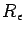
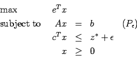

Midterm Exam, Spring 2002
Take Home Due: Thursday, March 28, 2002, in class.
This is to be all your own work. You may use any result from class,
homeworks, the textbook, or the books on reserve in the library.
Do not consult anybody or anything else.
My email address is mitchj@rpi.edu
and
my phone number is 276-6915.
I'll have my regular office hours on Wednesday from 10am to 12 noon.
In order that I can display grades, please write a 4 digit number
on the front of your solution set.
- 1.
- (30 points)
- (a)
- (10 points)
Consider the linear programming problem
where A is an m x n matrix,
b is an m-vector,
and c, u, and x are n-vectors.
Notice that each variable xi has a finite bound ui.
Show that the dual linear program to (Pb) is feasible.
- (b)
- (20 points)
Consider the standard form primal-dual pair
where A is an m x n matrix,
b and y are m-vectors,
and c, s, and x are n-vectors.
Assume (P) and (D) are both feasible.
Let QP and QD be the feasible regions for (P) and (D) respectively.
Show that if xi is bounded in QP then si is unbounded in QD.
- 2.
- (20 points)
Let B be an m x m nonsingular matrix, and suppose B=LQ,
where L is a lower-triangular m x m matrix and Q is an
orthogonal m x m matrix (that is, QQT=I).
- (a)
- (5 points) Show that BBT=LLT.
- (b)
- (5 points)
How would you solve the linear systems BTy=c and Bd=a given
L and Q. (The m-vectors c and a are known; the m-vectors
y and d have to be found.)
- (c)
- (5 points)
Suppose the matrix Q is not stored and you are given only L.
How can you solve BTy=c and Bd=a?
- (d)
- (5 points)
Suppose we now want to update the matrix B to the matrix
by replacing column p of B by the vector a.
Denote column p of B by b and let ep denote the pth unit
vector.
Then we can write
Show that
where
satisfies
for some orthogonal
matrix .
(Note: You may assume that every m x m matrix M has a
-factorization,
where Q is orthogonal and R is uppertriangular, and M=QR.
For this part, you do not need to derive
or
explicitly.)
- (e)
- (Extra credit: 5 points)
How would you update L to find the lower triangular matrix ?
- 3.
- (20 points)
Let z* be the finite optimal value of the feasible linear programming problem
where A is an m x n matrix,
b is an m-vector,
and c and x are n-vectors.
Let 
be the optimal value of the linear programming problem

where
is a positive scalar and e is the n-vector of all ones.
The quantity
can be interpreted as the 1-norm of the largest vector in the
level set
.
Let
.
Show that
- 4.
- (10 points)
Construct a four-vertex transshipment network with the following counterintuitive property:
If the supply is decreased by one unit at an appropriately chosen vertex and demand is decreased by one unit at
another appropriately chosen vertex then the optimal transshipment cost increases.
(Both the original network flow problem and the modified problem should
be feasible.)
- 5.
- (20 points)
Use the network simplex algorithm to find the minimum cost flow for the problem with
the following linear programming representation:
Use the initial basic feasible solution with basic variables:
and nonbasic variables
You should need three iterations.
John Mitchell
2002-03-19